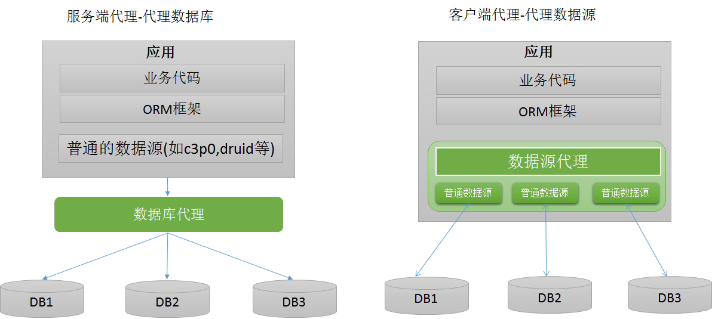
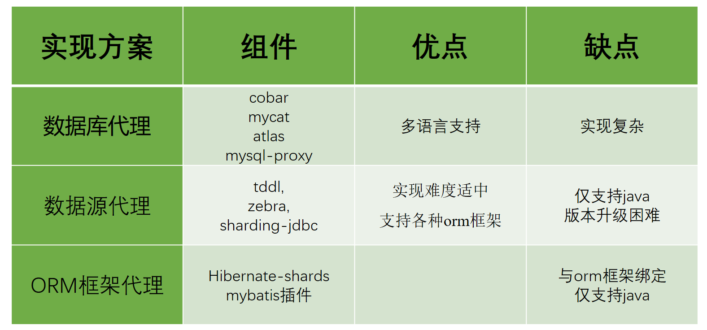

数据库中间件
为什么要有数据库中间件？
在分布式应用中，数据库很多都是主从集群，数据量大的数据库会有分库分表等操作。对于业务开发，如果既要关心读写分离，分库分表等逻辑，又要搞业务，效率大打折扣。因此数据库中间件诞生了，屏蔽一些业务无关的底层逻辑，让业务开发像操作单个数据库，单个表一样进行业务开发，提升迭代效率，减少事故的发生。
数据库中间件应该有哪些功能？
- 读写分离
- 分库分表
数据库中间件-读写分离
读写分离的优缺点
优点：
- 避免单点故障。
- 负载均衡，读能力水平扩展。通过配置多个slave节点，可以有效的避免过大的访问量对单个库造成的压力。
问题与挑战：
- 对sql类型进行判断。如果是select等读请求，就走从库，如果是insert、update、delete等写请求，就走主库。
- 主从数据同步延迟问题。因为数据是从master节点通过网络同步给多个slave节点，因此必然存在延迟。因此有可能出现我们在master节点中已经插入了数据，但是从slave节点却读取不到的问题。对于一些强一致性的业务场景，要求插入后必须能读取到，因此对于这种情况，我们需要提供一种方式，让读请求也可以走主库，而主库上的数据必然是最新的。
- 事务问题。如果一个事务中同时包含了读请求(如select)和写请求(如insert)，如果读请求走从库，写请求走主库，由于跨了多个库，那么jdbc本地事务已经无法控制，属于分布式事务的范畴。而分布式事务非常复杂且效率较低。因此对于读写分离，目前主流的做法是，事务中的所有sql统一都走主库，由于只涉及到一个库，jdbc本地事务就可以搞定。
- 高可用问题。主要包括：
- 新增slave节点：如果新增slave节点，应用应该感知到，可以将读请求转发到新的slave节点上。
- slave宕机或下线：如果其中某个slave节点挂了/或者下线了，应该对其进行隔离，那么之后的读请求，应用将其转发到正常工作的slave节点上。
- master宕机：需要进行主从切换，将其中某个slave提升为master，应用之后将写操作转到新的master节点上。
zebra读写分离设计
zebra提供了GroupDataSource来完成读写分离功能，解决了上述所有问题，且对业务方透明。开发人员可以像操作单个库那样，去访问mysql数据库集群，底层细节完全由zebra屏蔽。结合我司的实际情况，GroupDataSource还额外提供了就近路由、全链路压测、故障模拟、SET化支持、限流等多种功能。
典型的数据库中间件设计方案有2种：服务端代理(proxy：代理数据库)、客户端代理(datasource：代理数据源)。下图演示了这两种方案的架构：

服务端代理(proxy：代理数据库)中：
我们独立部署一个代理服务，这个代理服务背后管理多个数据库实例。而在应用中，我们通过一个普通的数据源(c3p0、druid、dbcp等)与代理服务器建立连接，所有的sql操作语句都是发送给这个代理，由这个代理去操作底层数据库，得到结果并返回给应用。在这种方案下，分库分表和读写分离的逻辑对开发人员是完全透明的。
客户端代理(datasource：代理数据源)：
应用程序需要使用一个特定的数据源，其作用是代理，内部管理了多个普通的数据源(c3p0、druid、dbcp等)，每个普通数据源各自与不同的库建立连接。应用程序产生的sql交给数据源代理进行处理，数据源内部对sql进行必要的操作，如sql改写等，然后交给各个普通的数据源去执行，将得到的结果进行合并，返回给应用。数据源代理通常也实现了JDBC规范定义的API，因此能够直接与orm框架整合。在这种方案下，用户的代码需要修改，使用这个代理的数据源，而不是直接使用c3p0、druid、dbcp这样的连接池。
主流数据库中间件对比

数据库代理
目前的实现方案有：阿里巴巴开源的cobar，mycat团队在cobar基础上开发的mycat，mysql官方提供的mysql-proxy，奇虎360在mysql-proxy基础开发的atlas。目前除了mycat，其他几个项目基本已经没有维护。
优点：多语言支持。也就是说，不论你用的php、java或是其他语言，都可以支持。原因在于数据库代理本身就实现了mysql的通信协议，你可以就将其看成一个mysql 服务器。mysql官方团队为不同语言提供了不同的客户端驱动，如java语言的mysql-connector-java，python语言的mysql-connector-python等等。因此不同语言的开发者都可以使用mysql官方提供的对应的驱动来与这个代理服务器建通信。
缺点：实现复杂。因为代理服务器需要实现mysql服务端的通信协议，因此实现难度较大。
数据源代理
目前的实现方案有：阿里巴巴开源的tddl，大众点评开源的zebra，当当网开源的sharding-jdbc。需要注意的是tddl的开源版本只有读写分离功能，没有分库分表，且开源版本已经不再维护。大众点评的zebra开源版本代码已经很久更新，基本上处于停滞的状态。当当网的sharding-jdbc目前算是做的比较好的，代码时有更新，文档资料比较全。
优点：更加轻量，可以与任何orm框架整合。这种方案不需要实现mysql的通信协议，因为底层管理的普通数据源，可以直接通过mysql-connector-java驱动与mysql服务器进行通信，因此实现相对简单。
缺点：仅支持某一种语言。例如tddl、zebra、sharding-jdbc都是使用java语言开发，因此对于使用其他语言的用户，就无法使用这些中间件。版本升级困难，因为应用使用数据源代理就是引入一个jar包的依赖，在有多个应用都对某个版本的jar包产生依赖时，一旦这个版本有bug，所有的应用都需要升级。而数据库代理升级则相对容易，因为服务是单独部署的，只要升级这个代理服务器，所有连接到这个代理的应用自然也就相当于都升级了。
ORM框架代理
目前有hibernate提供的hibernate-shards，也可以通过mybatis插件的方式编写。相对于前面两种方案，这种方案可以说是只有缺点，没有优点。